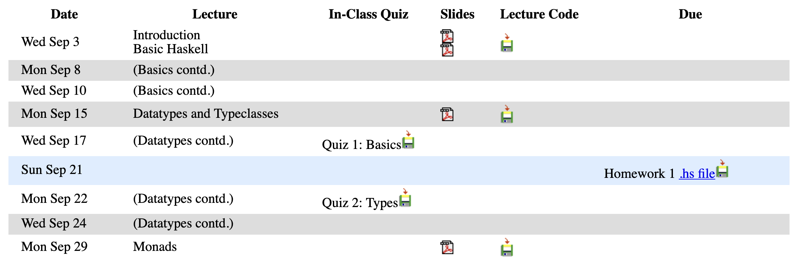
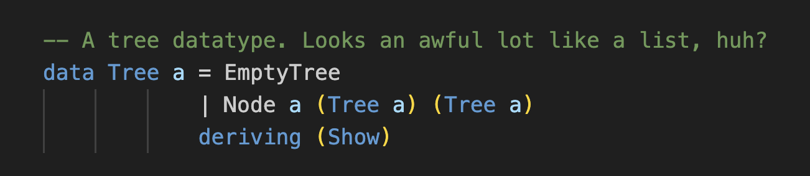
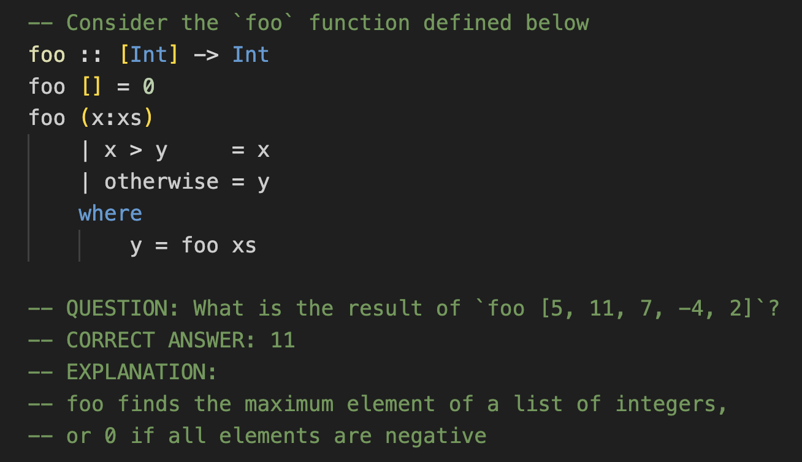

Home | Curriculum Vitae | Teaching | Research | Personal | Software Projects

Introduction
Hello! My name is Maxwell Levatich, but I usually go by Max. I'm a Computer Science PhD student studying at Columbia Unversity in New York City. I graduated from Yale University in 2020 with a B.S. and M.S. in Computer Science.
What follows is a digital teaching portfolio detailing my pedagogical experience, successes, and philosophy.
(This is a webpage I prepared as part of Columbia's Teaching Development Program as a PhD student, and for that reason this page will remain "frozen" in time. For more current information, visit my homepage!)
Teaching experience
2026
Instructor
ENGI 1006:
Introduction to Computing for Engineers and Applied Scientists, Columbia University (Spring).
- Currently preparing AI-forward curriculum changes for Spring
2025
Instructor
COMS 4995:
Parallel Functional Programming, Columbia University (Fall).
- Lectured to 25 students in upper-level elective covering Haskell and its support for parallelism
- Augmented existing syllabus with live-coding exercises and weekly short quizzes for attendance
2023
Head Teaching Assistant
ENGI 1006:
Introduction to Computing for Engineers and Applied Scientists, Columbia University (Fall).
- Designed and held weekly review section with supplemental exercises
2021
Teaching Assistant and project advisor
COMS 4995:
Parallel Functional Programming, Columbia University (Fall).
Teaching Assistant and project advisor
COMS 4115:
Programming Languages and Translators, Columbia University (Fall).
2020
Head Teaching Assistant
CS 112:
Introduction to Computer Programming, Yale University (Spring).
- Designed and held weekly review section with supplemental exercises
2019
Head Teaching Assistant
CS 50:
Introduction to Computer Science, Yale University, Harvard University (Fall).
- Designed and held weekly review section with supplemental exercises
- Led weekly TA meetings and pedagogy exercises for a large cohort of 32 TAs
Teaching Assistant
CS 112:
Introduction to Computer Programming, Yale University (Spring).
2018
Teaching Assistant
CS 50:
Introduction to Computer Science, Yale University, Harvard University (Fall).
Teaching Assistant
CS 112:
Introduction to Computer Programming, Yale University (Spring).
2017
Teaching Assistant
CS 50:
Introduction to Computer Science, Yale University, Harvard University (Fall).
Teaching statement
My teaching practice in Computer Science is guided by two primary goals; one, to surface moments of student empowerment, in which a learner feels confident in applying their skills in service to their community or personal aspirations; and two, to develop collaborative learning environments that can more easily spark those empowering moments even for more hesitant learners.
My own journey in Computer Science and teaching has been defined by these moments, and the liberal arts ethos of Yale that nurtured them. It was empowerment as a programmer that convinced me to major in CS, and empowerment as an educator that convinced me to pursue a PhD at Columbia. Along the way, I've had the incredible privilege of creating these empowering moments for others, as a Head TA driving the CS50 curriculum at Yale, as the Instructor of Record for Parallel Functional Programming at Columbia, as an advanced graduate of Columbia's Teaching Development Program, and in contributing to an AI-forward syllabus for Columbia's Introduction to Computing for Engineers and Applied Scientists, which I will soon teach as Instructor of Record. My teaching style has grown to center project-based learning, check-in assessments to entice students to lecture, and peer teaching, all in service of creating more of those empowering moments.
Empowering CS students through projects and pedagogy
At Yale, I spent three semesters as a TA for CS50, an experimental synchronous offering of Harvard's innovative introduction to Computer Science. Rather than bespoke on-campus lectures, students watched recordings of the Harvard lectures, so our fleet of 30 Yale TAs were tasked with the sole in-person instruction for the hundreds of students in the class; I held a 90-minute weekly lesson for a section of 20 students which I had almost complete freedom to design. In section and office hours I first witnessed those "aha" moments of student comprehension that all CS educators are familiar with. Those moments are the beginning of empowerment - when the computer suddenly turns from a frustrating black box into a tool to be wielded.
But CS50 demonstrates that full student empowerment belongs in every CS classroom, including at the entry-level; the entire arc of the course is bent towards the final project, a chance for students to use their learning to build something meaningful to them or their community. I mentored labors of love such as a networking webapp for campus musicians, a mobile app for personal financial health, and a procedurally generated action game. The interdisciplinary open-ended project is a wonderful tool for empowerment in CS, and one I aim to leverage in all my future teaching.
The excitement of empowering new programmers spurred me to TA Yale's introductory CS offerings for six semesters, including three more semesters of weekly sections for diverse new inductees into the world of coding. My sections stood out for my habit of soliciting feedback via Google Form on what topic reviews and teaching methods students found most useful and engaging - in my second year with CS50, I received a staff award for my "superior committment and zeal".
In my final year at Yale, I had the privilege of serving as a Head TA for both introductory courses, a role in which I worked closely with the instructors to shape Yale's adaptation of the curriculum. Through holding staff meetings and leading TA trainings, I discovered a new means of empowerment: mentorship in pedagogy. Students trained in effective teaching and tasked with helping their peers are themselves empowered as computer scientists by the knowledge that their skills are already of service to their community. Diversity and inclusion is a natural consequence; students from diverse backgrounds who are empowered to act as mentors can take prominent educational roles even as undergraduates, and pave the way for their peers. In the classroom, I use peer teaching exercises to foster this empowerment; out of the classroom, I want to build opportunities for undergraduates to engage with courses they've previously taken, beyond just TA-ing.
Teaching sample: My first experience teaching monads (part 1)
Building learning environments for empowerment
With the goal of earning a PhD and continuing to teach CS at the college level, I took these lessons and committments with me to Columbia, along with a question: given that the CS50x curriculum I was so recently immersed in is one of the most successful entirely-online courses in history, what is my contribution, as an in-person instructor with a physical classroom, to an enhanced liberal arts education?
Columbia's Teaching Development Program (TDP) for graduate students gave me the language and research grounding to answer this question. Amid workshops on Bloom's taxonomy and backward design, teaching observations, and sample lesson planning was a discussion of different types of learners - Marton and Säljö [0] distinguish hesitant or "strategic" learners from "deep" learners. In reality, these learners exist on a spectrum: my role as an in-person instructor is to create and sustain a collaborative learning environment for these diverse learners, using the tools of in-person assessment and collaborative work that are uniquely accessible in the physical classroom. This reflection was one highlight of many TDP takeaways - I am honored to have received certification for both the Foundational and the Advanced tracks of the program for my sustained efforts towards professional teaching development.
Currently, I am building a learning environment for diverse learners as the Instructor of Record for 25 students in Parallel Functional Programming (PFP), an upper-level elective for CS majors pioneered by my advisor, Stephen A. Edwards, for whom I previously TA'ed the course. PFP is an introduction to the functional programming paradigm by way of Haskell, and a subsequent exploration of Haskell's monadic support for parallelism, culminating in an open-ended final project that marries students' interdisciplinary interests with advanced, language-theoretic Haskell concepts and the physical realities of multi-core systems.
My modifications to Stephen's syllabus are aimed at bringing hesitant, strategic learners into the classroom, in the hopes of surfacing empowering moments that engage them deeply with the material. I administer a 10-minute pencil-and-paper quiz roughly every other lecture. The quiz is a single question about a short code snippet covering a recent topic. The quizzes are graded, but are very easy (avg. 90% of class correct) and low-weight (1% each), with the first three incorrect or missed quizzes dropped. The effect has been stark; learners who would otherwise disengage with lecture and fulfill course requirements asynchronously are coaxed into the classroom without the stress of a high-stakes assessment. Once there, it's my responsibility to not waste students' time; I've augmented Stephen's lecture material with frequent live-coding exercises, where I further encourage students to participate in the learning environment by following along in their IDEs or helping each other solve a coding challenge - techniques that build a "tactile" understanding of functional programming, with empowerment opportunities through peer teaching. Student feedback has been positive, and I eagerly await mid-semester evaluations, which will show me the areas where I can still refine the learning environment.
Generative AI looms large over any discussion of a learning environment. Depending on the context, it can help or hinder, and CS educators around the world are grappling with the possibilities. I've visited both sides of the aisle; In PFP I have a strict policy against generative AI, since one of the primary learning objectives is to be able to think intuitively in the functional paradigm, a mental re-wiring which is best built through repeated exposure and practice. Each line of code not written by the student is practice lost.
On the other hand, in the Spring I will also serve as Instructor of Record for Columbia's Introduction to Computing for Engineers and Applied Scientists, a large lecture aimed at non-majors. Here, the benefit of generative AI is clear: it's a faster track for non-experts to build powerful programs that tackle analysis problems in their discipline. Since TA-ing the course in 2023, I have closely followed Daniel Bauer's syllabus adjustments, which are aimed at teaching AI fluency and re-designing assessments away from simple coding exercises. As an instructor, I'm looking forward to furthering this development; Daniel and I will be piloting a group project that asks students to build a large, fully-featured codebase outside the scope of what they could produce "by hand". I have high hopes the experience will be even more empowering relative to the necessarily modest successes of CS50 final projects.
Teaching sample: My first experience teaching monads (part 2)
Growing as an educator
I want to bring inclusive learning environments and strategies for empowering students into the programming languages and systems classrooms. I'm well prepared to teach functional programming and would be excited to bring PFP to a new college. My research in static analysis and my experience TA-ing Columbia's Programming Languages and Translators have similarly prepared me to teach the fundamentals of compilers, another course that benefits from an open-ended final project to purpose-build a custom compiler. I've loved teaching introductions to programming in C, Java, Python, and Haskell, and would be perfectly happy to add more languages to that list. And as a hobbyist game developer, I dream of one day teaching a course on the design and implementation of video games.
I am eager to continue mentoring undergraduates in both research and pedagogy. I believe there are myriad empowering ways to involve undergraduates in CS education beyond simply hiring them to grade or hold office hours. To mentor in pedagogy effectively and grow my own teaching skills, I intend to become a more active participant in the CS education research community by contributing my own research, after having such a wonderful experience learning from talented educators at SIGCSE.
Learning environments, strategies for empowerment, and assessment design will all continue to evolve as generative AI cements its role in higher education, just as CS pedagogy always evolves with emerging technology. Attendant to curricular changes are ethical and social issues that CS departments around the world will have to reckon with together. I am preparing myself every day to navigate these changes and challenges while keeping student empowerment as a north star.
[0] Marton, F., & Säljö, R. (1976). On qualitative differences in learning: I—Outcome and process. British journal of educational psychology, 46(1), 4-11.
Syllabus and course materials design
I currently maintain the 2025 course website for Parallel Functional Programming here, which doubles as the syllabus.
These days, students (particularly in CS) interface with their classes through a variety of persistent online resources. In my opinion, one of the most important elements of a modern syllabus is to chart this constellation of course resources in a concise and unambiguous way. My PFP syllabus does this right from the top, identifying everything students can expect to find on the course website, the Courseworks page, and the Ed discussion board.
The centerpiece of the PFP syllabus is the course schedule. Using the marvels of modern web design (ok, 90s minimalist web design), I situate all lecture related materials, including slides, lecture code, quizzes, and homework assignments snugly within the course schedule, providing students a quick and easy visual reference for where they are in the course and what's coming next.
I approach teaching programming as an interactive exercise; as such, I spend more time in lecture writing code with students than I do presenting from slides. This code then becomes an important course material to pair with slide decks. After lecture, I clean up and annotate the day's code before uploading it to the course schedule:
The course schedule is similarly the home for quiz answers, which I make available with explanations for students to review after each quiz:
Alongside interactive coding, I use slides for three key purposes:
- Scaffolding lecture exercises with learning goals and takeaways
- Providing visual aides for particularly challenging concepts:
- Injecting a litte functional programming humor into lecture:
From slides, lecture recordings, lecture code, and suggested textbooks, students can choose their preferred way to engage with and review course content outside of class. I encourage students to email me or post on our Ed discussion board if they have any questions that aren't answered by the constellation of course resources or are otherwise outside of the syllabus' scope.
Student feedback and evaluations
Understanding and acting upon student feedback is one of the most direct and important avenues for growth as a teacher. I look forward to reviewing student responses to my upcoming midterm course evaluation for Parallel Functional Programming. As a Columbia TA, I have received glowing evaluations for each of the three courses I have staffed. Linked are complete evaluations for:
Aggregated, over 85% of students rated my overall quality, knowledgeability, and approachability as a TA as either "Very Good" or "Excellent".
Selected student comments:
"Max is the most patient and amazing TA ever. At the start of every recitation, he would ask us which particular topic we wanted to focus on...If we don't understand it in a certain way, he'll use another way to elucidate the concept...no matter what questions we ask or how many. Once, when we had to move out of the classroom because another class was using it, he gladly brought us to another corner to help us...He genuinely loves teaching."
"[Max] is one of the best TAs I have had so far. Very patient in address students' academic challenges. Highly knowledgeable of class material."
"Max explained things in a very clear and effective way."
"Very nice and approachable TA."
"Truth be told, I never went to a recitation, but...I'm sure he's excellent."
Certifications and awards
I'm proud to have earned the Advanced Track certification (the highest possible) from Columbia CTL's Teaching Development Program for "sustained teaching development in graduate school."
I was one of 3 TA's in a staff of 32 for Yale's offering of CS50 to receive the inaugural SCAZ award (named in good humor after Professor Brian Scasselati) for "superior committment and zeal" in fulfilling my many TA responsibilities.